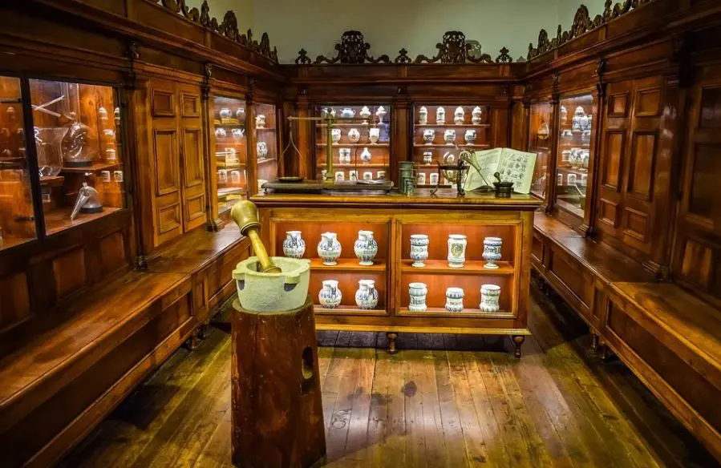

Panisse
Un apellido de raíces italo-francesas, tres generaciones de ciencia y óptica en Galicia, y una forma distinta de entender el lujo.
Un apellido
de origen italo-francés
en tierra gallega
Panisse es un apellido de raíces italo-francesas que, como tantas otras historias de emigración y arraigo, acabó tejiendo su historia en distintos rincones de Galicia. Lo llevamos con orgullo, porque no es solo un nombre: representa lo que la familia ha construido a lo largo de generaciones.
Cuando Félix fundó la óptica en Lugo, no dudó un momento en elegir el apellido de soltera de su abuela para dar nombre a la colección propia. María del Carmen Panisse Ferrer merecía ese reconocimiento. Científica, farmacéutica, empresaria y pionera en una época en que serlo costaba el doble de esfuerzo.
El apellido resume todo lo que la marca quiere ser: algo con historia detrás, con carácter propio y sin necesidad de grandes aspavientos para demostrar lo que vale.

María del Carmen Panisse Ferrer
Pioneira das Ciencias de Lugo
María del Carmen
Panisse Ferrer
A Coruña, 22 de noviembre de 1920 — Pontevedra, 7 de diciembre de 2001
Hija de Francisco de Paula Panisse Serrano, delineante de Hacienda, y María Ferrer Martínez, María del Carmen creció en un ambiente familiar que valoraba la cultura y el esfuerzo intelectual. En una España donde el acceso de las mujeres a la universidad era todavía una excepción, ella fue a la suya —y lo hizo dos veces.
Se licenció en Ciencias Químicas por la Universidad de Santiago de Compostela en 1944 y cinco años después obtuvo también la licenciatura en Farmacia. Dos titulaciones en una época en que muchas mujeres de su generación no habían podido terminar el bachillerato.
En 1951 abrió su farmacia en la calle 18 de Julio n.º 18 de Lugo, establecimiento que regentó durante más de treinta años. Fue su hija Isabel quien, con su diplomatura en Óptica, incorporó más tarde la sección óptica a ese mismo local familiar, prolongando el vínculo con la salud visual que llega hasta hoy.
Su espíritu inquieto no se limitó al mostrador. En 1959 publicó Aceites y grasas de animales marinos en Pontevedra, obra que muestra el alcance de su formación científica. Junto a su familia impulsó también la explotación de bateas de mejillón en la Illa de Arousa —bautizadas Panisse 1 y Panisse 2—, uniendo la tradición marisquera gallega con la misma capacidad emprendedora que la definió siempre.
Química, farmacéutica, investigadora y emprendedora. María del Carmen lo fue todo en una época en que serlo costaba el doble.
María del Carmen Panisse Ferrer · A Coruña, 1920 — Pontevedra, 2001
Tres generaciones,
un mismo hilo
La farmacia, la óptica y la ciencia pasan de mano en mano. Lo que María del Carmen plantó, Isabel cuidó, y Félix recoge hoy en Lugo.
María del Carmen
Química · Farmacéutica
Abrió su farmacia en Lugo en 1951 con dos licenciaturas y una vocación científica que se adelantó a su tiempo. Durante más de treinta años fue un referente en la salud de la ciudad y la raíz de un linaje que no ha dejado de crecer.
Isabel
Bióloga · Farmacéutica · Diplomada en Óptica
Hija de María del Carmen, Isabel cursó Biología y Farmacia y se diplomó en Óptica. Fue ella quien incorporó la sección óptica a la farmacia familiar de la calle 18 de Julio, añadiendo un nuevo capítulo a lo que su madre había construido.
Félix
Óptico-Optometrista · Farmacéutico
Nieto de María del Carmen, Félix fundó Panisse Óptica en Lugo para continuar el legado familiar con una visión contemporánea: cuidado visual de primer nivel, selección propia y calidad sin artificios. El apellido de su abuela, en el rótulo.
Panisse Óptica · Lugo, 2021Lujo silencioso,
sin intermediarios
Panisse nació hace cuatro años en Castroverde, hartos de ver cómo las grandes multinacionales imponían precios desorbitados a monturas que no justificaban ese coste. Decidimos hacer las cosas de otra manera.
Seleccionamos cada montura con criterio propio: materiales de calidad, proporciones bien resueltas, modelos en series muy limitadas. Sin logos enormes, sin marketing de lujo inflado. Solo lo que cuenta: que las gafas te queden bien y duren.
Es la esencia gallega de que lo bueno no tiene por qué ser caro ni ostentoso. Simplemente, de calidad. Y con un apellido que lleva más de setenta años cuidando la salud visual de Lugo.
4
Años de colección propia
+200
Referencias en catálogo
75
Años de legado familiar
3
Generaciones de ópticos

Las bateas
Panisse 1 y Panisse 2
En la Illa de Arousa, en las Rías Baixas gallegas, hay dos bateas de mejillón que llevan el nombre de la familia: Panisse 1 y Panisse 2. María del Carmen y su familia las impulsaron junto a la actividad farmacéutica, con esa misma capacidad de combinar ciencia, trabajo y arraigo al territorio gallego.
El apellido Panisse no es solo un nombre en un rótulo. Está en la tierra, en el mar y en la historia de Galicia.
Ría de Arousa · Wikimedia Commons · CC BY-SA
Descubre
la colección
Series limitadas, materiales con criterio y precios sin artificios. La selección que María del Carmen hubiera aprobado.